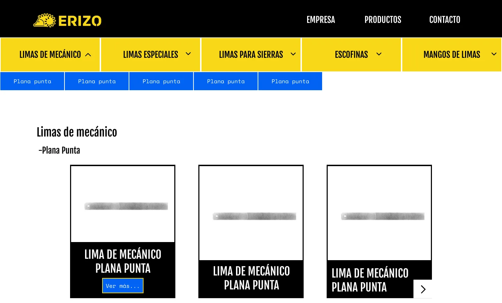
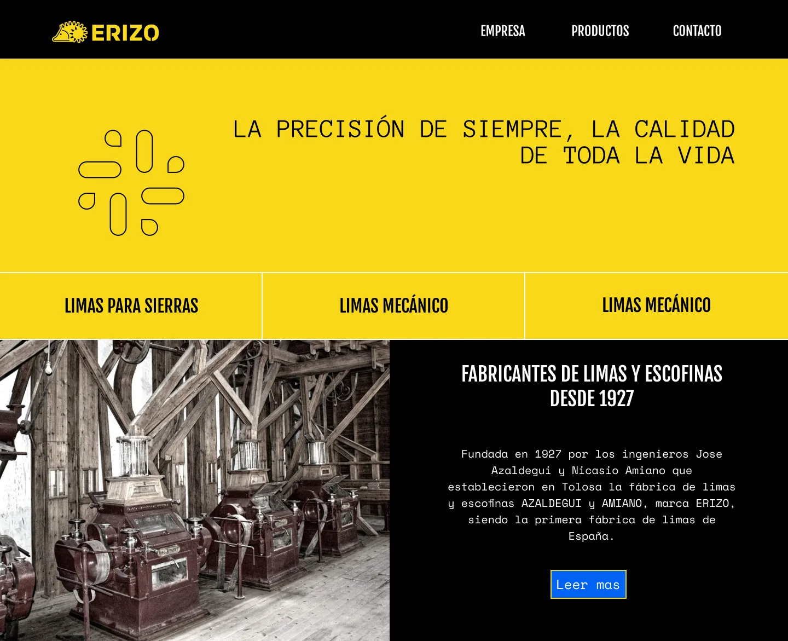
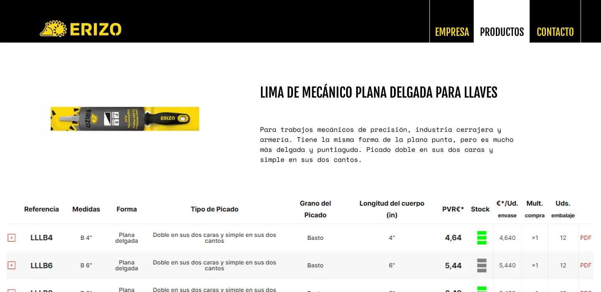

Trabajo profesional en Aghasa Turis
Erizo, casi cien años de historia en WordPress
Diseño en Figma y web corporativa en WordPress para Erizo, la primera fábrica de limas de España, fundada en Tolosa en 1927.
- Punto de partida
- Un catálogo técnico de cientos de referencias, difícil de recorrer.
- Resultado
- Tres niveles de navegación (familia, subfamilia y producto) para llegar a cualquier lima en pocos clics.

El encargo
Erizo fabrica limas y escofinas desde 1927. La web tenía que contar esa historia y, sobre todo, ordenar un catálogo muy técnico: cinco familias (limas de mecánico, limas especiales, limas para sierras, escofinas y mangos), cada una con sus subfamilias y decenas de referencias.
Una identidad que sale del logo
La paleta sale directamente del logo: el amarillo del erizo como color principal, el negro como secundario y un azul eléctrico de contraste para los botones y el pie. Son colores muy saturados, que recuerdan a las herramientas y a la señalética de un taller.
- Primario
#f8d819 - Secundario
#000000 - Contraste
#0263f5 - Fondo
#ffffff
Tipografía
Fjalla One, condensada y en mayúsculas, para los títulos y el menú. Para el texto, dos monoespaciadas: Anonymous Pro en el titular grande y Space Mono en el cuerpo. Recuerdan a las referencias grabadas en las limas y a las fichas técnicas, y dan a una marca centenaria un aire actual.

Ordenar un catálogo técnico
El reto principal era que alguien encontrara una lima concreta entre cientos sin perderse. Lo resolví con tres niveles de navegación:
- Familias, en pestañas amarillas bajo el menú, que se despliegan con una flecha.
- Subfamilias, en una barra azul que aparece al abrir una familia.
- Productos, en tarjetas con la imagen, el nombre y un botón para ver la ficha.
La ficha de cada producto muestra la descripción y una tabla con todas sus referencias: medidas, tipo de picado, grano, longitud, stock y ficha en PDF.

Del diseño a WordPress
Después del diseño desarrollé la web en WordPress, con los estilos hechos a medida para respetar la identidad. Desde entonces la web se ha actualizado, así que lo que se ve hoy en erizo1927.com ya no es exactamente mi versión: por eso este análisis enseña el diseño original.